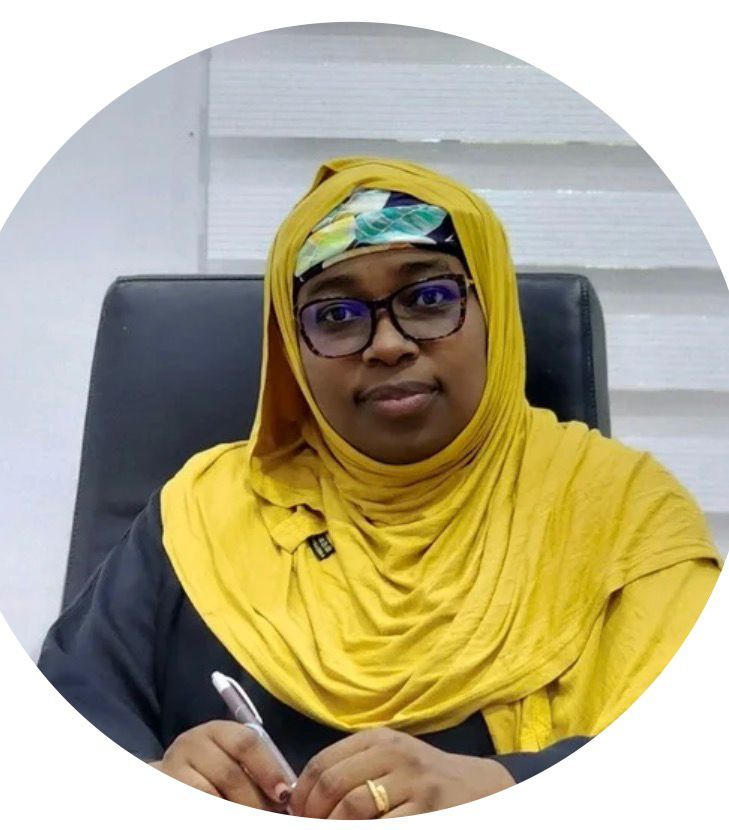

Every great mission begins with a personal story.
Every great cause begins with a story — a story of love, pain, courage and unshakable hope.

Distinguished Hum. Huseina Baba-Inna (FIHSD)
CEO, Aisha Abba Abdullahi Memorial Foundation (3AM Foundation)
For me, the story of 3AM Foundation began in the quiet hospital rooms where I cared for my beloved daughter, Aisha Abba Abdullahi, through her brave battle with blood cancer.
In those moments of fear, faith and uncertainty, I witnessed firsthand the pain carried by patients and their families; the difficult decisions, the silent tears, and the fragile hope that kept them going.
Aisha had a smile that could outshine her struggles.
Born on August 7, 2001, Aisha lived her life like a beam of light warm, calm, cheerful, patient, kind and endlessly full of life.
Her smile was more than a gesture; it was her trademark. It could lift a heavy heart, calm a worried mind and remind everyone around her that even in difficult moments, there was still something to believe in.
She believed that no matter how hard life gets, you never stop smiling.
A Champion's Spirit
Shortly after gaining admission into university, Aisha's dreams were interrupted by a diagnosis that would change everything: blood cancer.
Yet she refused to let the diagnosis define her. Drawing strength from survivors such as Roman Reigns, she faced her battle with the spirit of a champion and the heart of a believer.
Each day became a lesson in courage. Each smile became a message of faith. Every moment became a reminder of the preciousness of life.
On November 20, 2019, at the tender age of 18, Aisha's earthly journey came to an end.
But her story did not end there.
Her story became a movement.
The Aisha Abba Abdullahi Memorial Foundation; 3AM Foundation.
What began as a mother's way of honouring her daughter's memory has grown into a movement committed to bringing hope to blood cancer patients and their families across Nigeria.
Through awareness and advocacy campaigns, research, voluntary blood donation and support services, 3AM Foundation works to ensure that no family has to face this journey alone.
We believe that access to life-saving interventions should not be determined by circumstance. We believe families deserve information, support and hope. And we believe that a single act of compassion can change the course of someone's life.
A Promise to Save Lives
Since our establishment in 2021, 3AM Foundation has remained dedicated to supporting blood cancer patients while promoting voluntary blood donation across Nigeria.
Our mission is simple but powerful: to create awareness, drive advocacy, and deliver support that truly saves lives.
Through partnerships with organisations including the National Blood Service Agency, the Nigerian Cancer Society and the Nigeria Institute for Cancer Research and Treatment, we continue to advance voluntary blood donation drives, awareness campaigns and psychosocial support for patients and their families.
The Work Ahead
But our work is far from done.
We envision a future where access to blood and cancer care is never limited by circumstance. A future where patients can find help when they need it and where families do not have to face their darkest moments alone.
That is why we are working toward establishing a private blood bank and a voluntary blood donation van bringing life-saving resources closer to the people who need them most.
Giving Blood, Saves Lives
Every pint of blood can become a second chance for someone fighting for their life.
Through the “Giving Blood, Saves Lives” project, we actively champion voluntary blood donation across Nigeria.
Because every pint of blood is a gift of life — and every donor is a silent hero.
What Aisha Left With Us
Aisha wasn't just a fighter. She was proof that even the shortest lives can leave the longest shadows of hope.
She taught us something profound: it is not simply about how long we live, or whether we win or lose a particular fight. It is about how we live, how we touch others, and what we leave behind when our journey comes to an end.
Her courage continues to inspire us to fight harder, give more and believe that something good can come from even the deepest pain.
I invite individuals, organisations, institutions and partners to join hands with us.
Together, we can bring hope to the hopeless, strength to the weak, and support to those fighting for their lives.